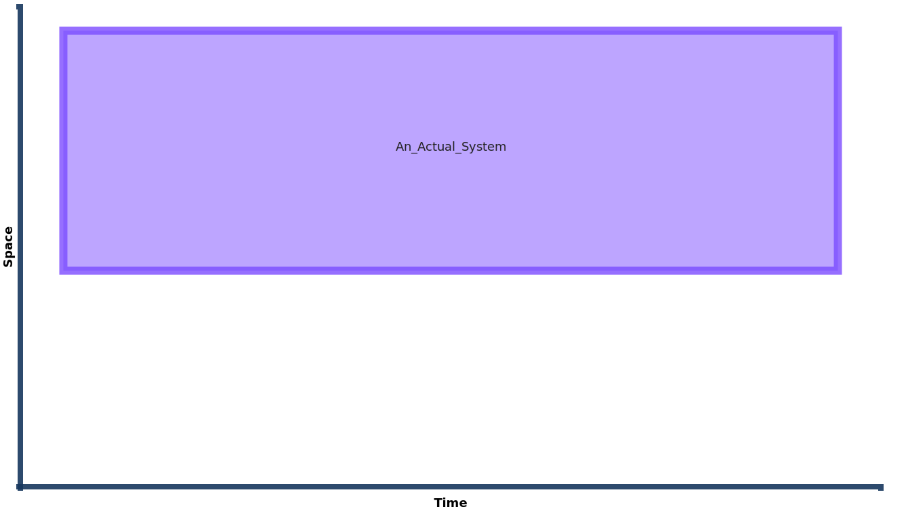

System
system Entity Type
A foundational description of an actual system is an organised or connected group of physical_object. Such physical objects can be biological organisms, people, organisations and intentionally constructed functional items. For this set of pages we shall focus on functional systems; those that are intentionally arranged to have an intended_role when they are involved in an activity such that they participate in a way that is consistent with their intended role (the intended_role is the kind (role') that the systems in question are member_of)(1).
- There is a wrinkle in the HQDM documentation for kind_of_functional_system and kind_of_functional_system_component. They are both missing the corresponding relation
intended_role_by_class. This has been raised as an issue in MagmaCore here. However, this relation is used in the worked example as it is appropriate, and useful, in the use of this model pattern.
For this page we shall introduce a functional system as a distinct whole-life individual, paving the way for us to add a functional system component in the next page
Spacetime Diagram
The diagram below indicates that a whole-life functional_system exists between two points in time (in the graphs and TTL below you can see that we have used real date-times to allow the generation of this spacetime diagram from the data).
 Diagram generated using prototype SVG diagram generator using HQDM objects as input TTL.
{kind=link}
Implementation
Each instance of an functional_system will be a member_of_kind of some kind_of_functional_system (this SET membership pattern is inherited by all subtypes of individual). A node-edge graph that illustrates "An_Actual_System" from the diagram above is shown below, with the data object id for the instance of functional_system itself being shown in bold.
graph LR
248501bc-b037-4a4d-a908-45e9c7a99049(("<b> patterns <br> 248501bc-b037-4a4d <br> -a908-45e9c7a99049"))--->|"intended_role"|6d66db73-2f01-43e8-9596-4c2de020e2b5(("patterns-rdl <br> 6d66db73-2f01-43e8 <br> -9596-4c2de020e2b5"));
248501bc-b037-4a4d-a908-45e9c7a99049(("<b> patterns <br> 248501bc-b037-4a4d <br> -a908-45e9c7a99049"))--->|"beginning"|04f7bde1-cc90-4d77-840b-1a412dfe2ed7(("patterns <br> 04f7bde1-cc90-4d77 <br> -840b-1a412dfe2ed7"));
248501bc-b037-4a4d-a908-45e9c7a99049(("<b> patterns <br> 248501bc-b037-4a4d <br> -a908-45e9c7a99049"))--->|"member_of_kind"|789ea366-b6a6-4198-ac2a-9b05b22bfd1c(("patterns-rdl <br> 789ea366-b6a6-4198 <br> -ac2a-9b05b22bfd1c"));
248501bc-b037-4a4d-a908-45e9c7a99049(("<b> patterns <br> 248501bc-b037-4a4d <br> -a908-45e9c7a99049"))--->|"part_of_possible_world"|aa4f2ebf-e408-4702-be85-bc7dc44fb60e(("patterns <br> aa4f2ebf-e408-4702 <br> -be85-bc7dc44fb60e"));
248501bc-b037-4a4d-a908-45e9c7a99049(("<b> patterns <br> 248501bc-b037-4a4d <br> -a908-45e9c7a99049"))--->|"data_EntityName"|An_Actual_System["An_Actual_System"];
248501bc-b037-4a4d-a908-45e9c7a99049(("<b> patterns <br> 248501bc-b037-4a4d <br> -a908-45e9c7a99049"))--->|"ending"|89bfc101-14c0-48b6-9fbf-a07af990b57a(("patterns <br> 89bfc101-14c0-48b6 <br> -9fbf-a07af990b57a"));
248501bc-b037-4a4d-a908-45e9c7a99049(("<b> patterns <br> 248501bc-b037-4a4d <br> -a908-45e9c7a99049"))--->|"type"|functional_system(["hqdm <br> functional_system"]);
789ea366-b6a6-4198-ac2a-9b05b22bfd1c(("patterns-rdl <br> 789ea366-b6a6-4198 <br> -ac2a-9b05b22bfd1c"))--->|"has_component_by_class"|c7849d0f-9941-4d4a-81ad-4ad67022ede2(("patterns-rdl <br> c7849d0f-9941-4d4a <br> -81ad-4ad67022ede2"));
789ea366-b6a6-4198-ac2a-9b05b22bfd1c(("patterns-rdl <br> 789ea366-b6a6-4198 <br> -ac2a-9b05b22bfd1c"))--->|"data_EntityName"|KindOfFunctionalSystem__Generic_System["KindOfFunctionalSystem <br> __Generic_System"];
789ea366-b6a6-4198-ac2a-9b05b22bfd1c(("patterns-rdl <br> 789ea366-b6a6-4198 <br> -ac2a-9b05b22bfd1c"))--->|"intended_role_by_class"|6d66db73-2f01-43e8-9596-4c2de020e2b5(("patterns-rdl <br> 6d66db73-2f01-43e8 <br> -9596-4c2de020e2b5"));
789ea366-b6a6-4198-ac2a-9b05b22bfd1c(("patterns-rdl <br> 789ea366-b6a6-4198 <br> -ac2a-9b05b22bfd1c"))--->|"type"|kind_of_functional_system(["hqdm <br> kind_of_functional <br> _system"]);From the node-edge graph it can be seen that for this kind of (admittedly generic, for this example,) system there is a has_component_by_class relation. This is an indication that systems of this kind comprise component(s) of a certain kind. For functional systems, frequently the objects of information management activities, this is a natural consequence of systems being designed, constructed / assembled / arranged by humans in an intended way (often in large numbers, like consumer electronics or medical and military equipment).
There is also an intended_role_by_class relationship for the instance of kind_of_functional_system, showing that systems that are members of this kind are intended to have a role as a participant in activity. While it is used as a stub for this worked example it allows integrated representation of functional systems and the activities that they are intended to be (and actually) involved in(1). For illustrative purposes the instance of functional_system itself is also granted intended_role to match the intended_role_by_class commitment to the kind that this system is member_of.(2)
- As always, only if required to meet an information need.
- In HQDM these relations are mandatory, in EXPRESS the notation is "SET [1:?] OF role". This is a good illustration of the conceptual nature of HQDM. These relations are always true. That doesn't mean that they have to be used in an information management context, as it may require work beyond what is needed to satisfy the information requirement. However, having them expressed in HQDM in this way allows those using it to make a conscious decision to, or not to, use these sorts of model features. An implementation consequence may be in code-based or model validation rules, like Magma Core's builders, that can throw exceptions if mandatory relationships are not present.
TURTLE
This TURTLE also includes the functional_system_component objects that are part of this worked example and are discussed in this page.
@prefix diag: <https://apollo-protocol.github.io/ns/2023/diagram-editor/diagram#> .
@prefix hqdm: <https://hqdmtop.github.io/hqdm#> .
@prefix patterns: <https://github.com/ClimbingAl/code-for-hqdm-patterns/patterns#> .
@prefix patterns-rdl: <https://github.com/ClimbingAl/code-for-hqdm-patterns/patterns-rdl#> .
patterns-rdl:c18a61d8-4bd7-4c0a-87b8-2802bbadc12e
a hqdm:class_of_installed_functional_system_component ;
patterns-rdl:comment "Class_of_installed_system_component_whose_members_are_temporal_part_of_members_of_Kind_Of_Generic_Ordinary_Functional_Object_AND_Kind_of_Generic_Component" ;
patterns-rdl:record_created "2024-01-20T19:00:13.857877704Z" ;
patterns-rdl:record_creator "HqdmPatternProject_User1" ;
hqdm:data_EntityName "ClassOfInstalledFunctionalSystemComponent__Class_of_Installed_Generic_Ordinary_Functional_Object" ;
hqdm:has_superclass patterns-rdl:c7849d0f-9941-4d4a-81ad-4ad67022ede2 , patterns-rdl:57d07834-df10-47c1-8bb3-9a2238615300 ;
hqdm:part__of_by_class patterns-rdl:c7849d0f-9941-4d4a-81ad-4ad67022ede2 .
patterns-rdl:c7849d0f-9941-4d4a-81ad-4ad67022ede2
a hqdm:kind_of_functional_system_component ;
patterns-rdl:comment "Kind_of_system_component_whose_members_are_temporal_part_of_members_of_Generic_System" ;
patterns-rdl:record_created "2024-01-20T19:00:13.857158503Z" ;
patterns-rdl:record_creator "HqdmPatternProject_User1" ;
hqdm:data_EntityName "KindOfSystemComponent__Kind_of_Generic_Component" ;
hqdm:part__of_by_class patterns-rdl:789ea366-b6a6-4198-ac2a-9b05b22bfd1c .
patterns-rdl:57d07834-df10-47c1-8bb3-9a2238615300
a hqdm:class_of_state_of_ordinary_functional_object ;
patterns-rdl:comment "Class_of_state_of_ordinary_functioal_object_whose_members_are_temporal_part_of_members_of_Kind_Of_Ordinary_Functional_Object" ;
patterns-rdl:record_created "2024-01-20T19:00:13.855959302Z" ;
patterns-rdl:record_creator "HqdmPatternProject_User1" ;
hqdm:data_EntityName "ClassOfStateOfOrdinaryFunctionalObject__Class_Of_State_Of_Generic_Ordinary_Functional_Object" ;
hqdm:part__of_by_class patterns-rdl:1167c36e-ba05-4da2-a632-3739d82f1fb1 .
patterns-rdl:6d66db73-2f01-43e8-9596-4c2de020e2b5
a hqdm:role ;
patterns-rdl:comment "Generic_role_of_System_in_intended_activity." ;
patterns-rdl:record_created "2024-01-20T19:00:13.851723799Z" ;
patterns-rdl:record_creator "HqdmPatternProject_User1" ;
hqdm:data_EntityName "RoleOfGenericSystem" .
patterns:248501bc-b037-4a4d-a908-45e9c7a99049
a hqdm:functional_system ;
patterns-rdl:record_created "2024-01-20T19:00:13.853257400Z" ;
patterns-rdl:record_creator "HqdmPatternProject_User1" ;
hqdm:beginning patterns:04f7bde1-cc90-4d77-840b-1a412dfe2ed7 ;
hqdm:data_EntityName "An_Actual_System" ;
hqdm:ending patterns:89bfc101-14c0-48b6-9fbf-a07af990b57a ;
hqdm:intended_role patterns-rdl:6d66db73-2f01-43e8-9596-4c2de020e2b5 ;
hqdm:member_of_kind patterns-rdl:789ea366-b6a6-4198-ac2a-9b05b22bfd1c ;
hqdm:part_of_possible_world patterns:aa4f2ebf-e408-4702-be85-bc7dc44fb60e .
patterns:89bfc101-14c0-48b6-9fbf-a07af990b57a
a hqdm:point_in_time ;
patterns-rdl:record_created "2024-01-20T19:00:13.869116912Z" ;
patterns-rdl:record_creator "HqdmPatternProject_User1" ;
hqdm:data_EntityName "2024-03-10T00:00" ;
hqdm:member_of patterns-rdl:585c2993-cb10-49de-b336-41d5da2718dd ;
hqdm:part_of_possible_world patterns:aa4f2ebf-e408-4702-be85-bc7dc44fb60e .
patterns-rdl:789ea366-b6a6-4198-ac2a-9b05b22bfd1c
a hqdm:kind_of_functional_system ;
patterns-rdl:comment "Kind_of_functional_system_that_is_generic._Note_this_is_subclass_of_class_of_ordinary_functional_object." ;
patterns-rdl:record_created "2024-01-20T19:00:13.851986899Z" ;
patterns-rdl:record_creator "HqdmPatternProject_User1" ;
hqdm:data_EntityName "KindOfFunctionalSystem__Generic_System" ;
hqdm:has_component_by_class patterns-rdl:c7849d0f-9941-4d4a-81ad-4ad67022ede2 ;
hqdm:intended_role_by_class patterns-rdl:6d66db73-2f01-43e8-9596-4c2de020e2b5 .
patterns:04f7bde1-cc90-4d77-840b-1a412dfe2ed7
a hqdm:point_in_time ;
patterns-rdl:record_created "2024-01-20T19:00:13.867952711Z" ;
patterns-rdl:record_creator "HqdmPatternProject_User1" ;
hqdm:data_EntityName "2024-01-01T00:00" ;
hqdm:member_of patterns-rdl:585c2993-cb10-49de-b336-41d5da2718dd ;
hqdm:part_of_possible_world patterns:aa4f2ebf-e408-4702-be85-bc7dc44fb60e .
patterns-rdl:99236fee-3a01-4b7d-9899-58d04a792dda
a hqdm:role ;
patterns-rdl:comment "Generic_role_of_Ordinary_Functional_Object." ;
patterns-rdl:record_created "2024-01-20T19:00:13.854171101Z" ;
patterns-rdl:record_creator "HqdmPatternProject_User1" ;
hqdm:data_EntityName "RoleOfOrdinaryFunctionalObject" .
patterns:ef040bc9-955e-4f21-8c41-dbe7cbc075aa
a hqdm:point_in_time ;
patterns-rdl:record_created "2024-01-20T19:00:13.868430511Z" ;
patterns-rdl:record_creator "HqdmPatternProject_User1" ;
hqdm:data_EntityName "2024-01-24T13:31" ;
hqdm:member_of patterns-rdl:585c2993-cb10-49de-b336-41d5da2718dd ;
hqdm:part_of_possible_world patterns:aa4f2ebf-e408-4702-be85-bc7dc44fb60e .
patterns-rdl:1167c36e-ba05-4da2-a632-3739d82f1fb1
a hqdm:kind_of_ordinary_functional_object ;
patterns-rdl:record_created "2024-01-20T19:00:13.854991301Z" ;
patterns-rdl:record_creator "HqdmPatternProject_User1" ;
hqdm:data_EntityName "Kind_Of_Generic_Ordinary_Functional_Object" ;
hqdm:intended_role_by_class patterns-rdl:99236fee-3a01-4b7d-9899-58d04a792dda .
patterns:f7294e91-f03f-44aa-9b48-e625db2309cf
a hqdm:installed_functional_system_component ;
patterns-rdl:record_created "2024-01-20T19:00:13.872272114Z" ;
patterns-rdl:record_creator "HqdmPatternProject_User1" ;
hqdm:beginning patterns:24c3709f-5f48-4e54-8e5b-2084ade01693 ;
hqdm:data_EntityName "Generic_Object_Installed_As_Generic_System_Component" ;
hqdm:ending patterns:ef040bc9-955e-4f21-8c41-dbe7cbc075aa ;
hqdm:member_of patterns-rdl:c18a61d8-4bd7-4c0a-87b8-2802bbadc12e ;
hqdm:part_of_possible_world patterns:aa4f2ebf-e408-4702-be85-bc7dc44fb60e ;
hqdm:temporal__part_of patterns:619eeae9-bce3-49f4-be81-067307e2cebb ;
hqdm:temporal_part_of patterns:e1d91ef0-7e00-44f5-8220-31c3f9df03fa .
patterns:24c3709f-5f48-4e54-8e5b-2084ade01693
a hqdm:point_in_time ;
patterns-rdl:record_created "2024-01-20T19:00:13.868226411Z" ;
patterns-rdl:record_creator "HqdmPatternProject_User1" ;
hqdm:data_EntityName "2024-01-14T13:31" ;
hqdm:member_of patterns-rdl:585c2993-cb10-49de-b336-41d5da2718dd ;
hqdm:part_of_possible_world patterns:aa4f2ebf-e408-4702-be85-bc7dc44fb60e .
patterns:e1d91ef0-7e00-44f5-8220-31c3f9df03fa
a hqdm:functional_system_component ;
patterns-rdl:record_created "2024-01-20T19:00:13.870207113Z" ;
patterns-rdl:record_creator "HqdmPatternProject_User1" ;
hqdm:beginning patterns:04f7bde1-cc90-4d77-840b-1a412dfe2ed7 ;
hqdm:component_of patterns:248501bc-b037-4a4d-a908-45e9c7a99049 ;
hqdm:data_EntityName "An_Actual_Generic_System_Component" ;
hqdm:ending patterns:89bfc101-14c0-48b6-9fbf-a07af990b57a ;
hqdm:intended_role patterns-rdl:a7611aea-be7b-4856-a6cd-a39cf2e1e630 ;
hqdm:member_of_kind patterns-rdl:c7849d0f-9941-4d4a-81ad-4ad67022ede2 ;
hqdm:part_of_possible_world patterns:aa4f2ebf-e408-4702-be85-bc7dc44fb60e .
patterns:619eeae9-bce3-49f4-be81-067307e2cebb
a hqdm:ordinary_functional_object ;
patterns-rdl:record_created "2024-01-20T19:00:13.870274913Z" ;
patterns-rdl:record_creator "HqdmPatternProject_User1" ;
hqdm:data_EntityName "An_actual_generic_ordinary_functional_object" ;
hqdm:member_of_kind patterns-rdl:1167c36e-ba05-4da2-a632-3739d82f1fb1 ;
hqdm:part_of_possible_world patterns:aa4f2ebf-e408-4702-be85-bc7dc44fb60e .
patterns-rdl:a7611aea-be7b-4856-a6cd-a39cf2e1e630
a hqdm:role ;
patterns-rdl:comment "Role_of_Generic_System_Component_when_functioning_in_intended_activities." ;
patterns-rdl:record_created "2024-01-20T19:00:13.856034802Z" ;
patterns-rdl:record_creator "HqdmPatternProject_User1" ;
hqdm:data_EntityName "RoleOfGenericSystemComponent" .
Do whole-life systems exist?
As with the similar question about whole-life individual we should not take for granted that whole-life systems are easy to use. They are a pragmatic compromise (and not incompatible with the foundational theory, just a pragmatic restriction on how types and SETs are surfaced in the model itself).
Functional systems are familiar to us; doors, computers, cars, ships, railways, energy grids, power plants, scissors, kettles, etc. However, what isn't familiar to us is thinking about all of them as systems and how they can be composed of component parts (in some systems these can be called "sub-systems"). Behind the scenes these component parts may also be functional_systems in their own right. If this is the case in the 'real' world then we should be able to represent them as they are (see system_component).
However, systems (and their component parts) can change state frequently, in many cases pseudo-independently of each other (consider the examples listed in the previous paragraph and what happens to them, and their parts, as they operate normally). In addition, systems can be damaged & upgraded and some can even be reconfigured. If that turns out to be important to the information management of an actual system or systems then we need to bear this in mind when coming up with information model to accommodate this. The model patterns in HQDM can accommodate all of these circumstances, as long as there is clarity about the need for modelling it and an objective, rigorous implementation approach.
This documentation is an introduction to addressing these model patterns. The authors are unaware of any information-based system that can address these challenges so far, so there is potential to pilot these techniques in any application area that is limited by not being able to keep track of information relating to all, or part, of the state of systems.
Strategies for implementation of the functional_system pattern
TBC. Cover system design, system analysis and additive approach.
References
HQDM book references: 14, 17.10, 17.17, 17.28
Entity Types: system, state_of_system, kind_of_system
MagmaCore (Java) reference: system, state_of_system, kind_of_system.
MagmaCore (Java) builder classes: SystemBuilder.java, StateOfSystemBuilder.java, KindOfSystemBuilder.java.
Source code used to generate the data for this system example, combined with its associated system_component, is available here.